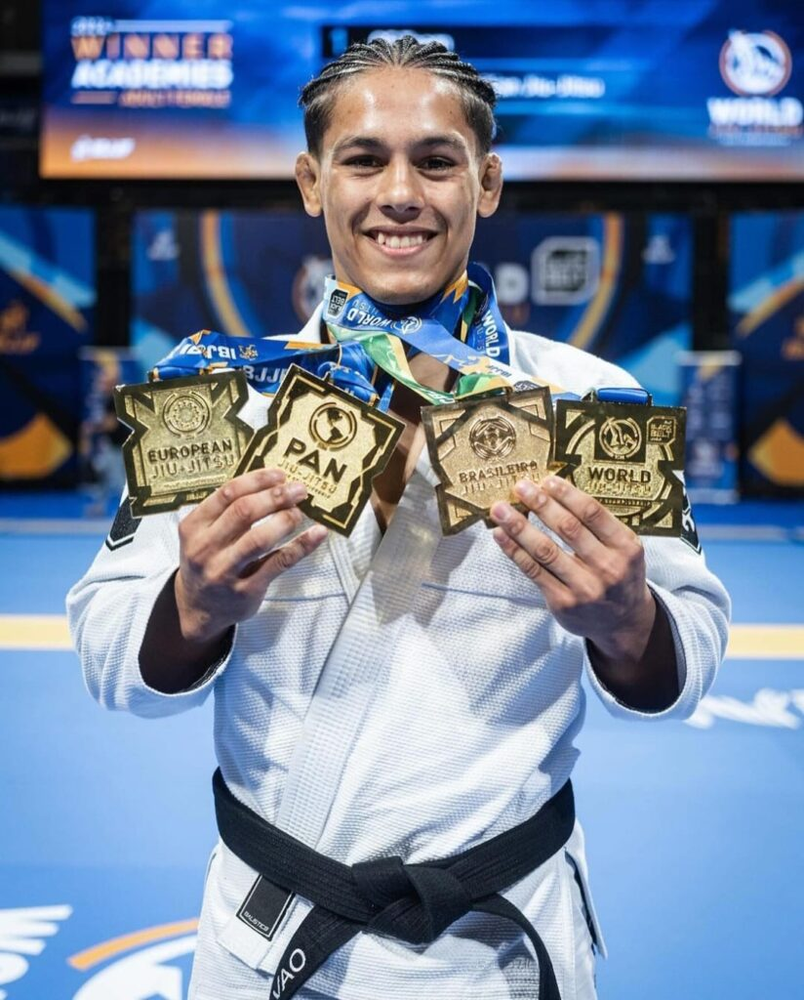

Quem é 'Mica'?
Aos 20 anos de idade o brasileiro Mica Galvão se tornou o atleta mais jovem da história a completar o ‘grand slam’ do jiu-jitsu. No último domingo (2), o faixa-preta conquistou o título mundial na categoria dos leves e terminou por triunfar nos quatro principais torneios da modalidade em uma mesma temporada. Para tal, Mica voltou a vencer Andy Murasaki na final, desta vez na pontuação. Se nas finais do europeu e do pan americano o jovem de 20 anos havia finalizado com certa tranquilidade, desta vez a disputa foi equilibrada e o triunfo foi anotado pela superioridade nas vantagens, após o empate em dois a dois no placar. Além das vitórias no mundial, europeu e pan americano, Mica também garantiu o lugar mais alto do pódio no campeonato brasileiro ao finalizar seus três adversários, incluindo Jhonathan Marques na grande final.
